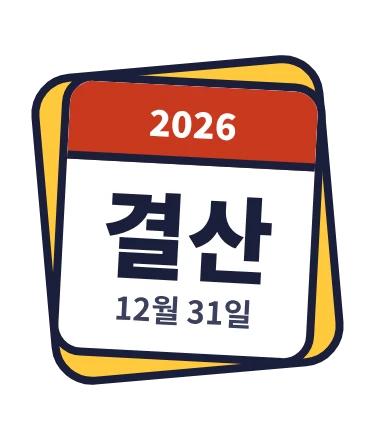

2026 연말 결산 테스트
올해의 나는 어떤 한 해를 보냈을까?
10문항으로 정리하는 나의 2026년
✅ 총 10문항 · 예상 소요시간 약 1분
✅ 올해를 다섯 가지 '한 해의 이름' 중 하나로 정리해 드려요
✅ 내년에 가져갈 것 한 가지까지 알려 드려요
📖 한 해를 돌아보는 일에 대하여
12월이 되면 "올해 뭐 했지?"라는 생각이 들어요. 바쁘게 살았는데 손에 잡히는 게 없는 것 같고, 남들은 다 뭔가 이룬 것처럼 보이죠. 그런데 한 해의 의미가 꼭 성과에만 있는 건 아니에요. 달린 해가 있으면 쉬는 해가 있고, 바꾸는 해가 있으면 지키는 해가 있습니다. 이 테스트는 올해가 그중 어떤 해였는지 이름을 붙여 보는 놀이예요.
왜 이름을 붙이면 정리가 될까
일 년은 길어서 통째로 떠올리기 어려워요. 그래서 기억은 마지막 몇 주와 가장 강했던 장면 위주로 남습니다. 12월이 힘들면 한 해 전체가 힘들었던 것처럼 느껴지는 것도 그래서예요. 한 해에 이름 하나를 붙이면 흩어진 장면들이 한 줄로 묶이고, 내가 무엇에 시간을 썼는지가 보이기 시작합니다.
혼자 해 보는 연말 결산 세 가지 질문
테스트 결과와 함께 아래 질문에 한 줄씩 답해 보면 더 또렷해져요.
- 올해 끝낸 것 세 가지 — 크기는 상관없어요. 마친 일, 그만둔 일, 버틴 일도 다 끝낸 것입니다.
- 올해 고마운 사람 한 명 — 이름이 바로 떠오르는 그 사람이 올해의 인복이에요.
- 내년에 덜 하고 싶은 것 하나 — 더 할 것보다 덜 할 것을 먼저 정하면 계획이 가벼워집니다.
결과를 이렇게 읽어보세요
다섯 가지 결과에는 좋고 나쁨이 없어요. '전력 질주의 해'가 '숨 고르기의 해'보다 잘 산 해가 아니고, '뿌리 내린 해'가 '방향 전환의 해'보다 못한 해도 아닙니다. 지난 몇 년을 떠올려 보면 해마다 다른 이름이 붙을 거예요. 올해의 이름을 알면 내년에 무엇이 필요한지도 자연스럽게 보입니다.
자주 묻는 질문
결과가 두 가지에 걸친 것 같아요.
충분히 그럴 수 있어요. 상반기와 하반기가 전혀 달랐던 해도 많거든요. 결과 화면의 '이 유형이 나온 정도'가 낮게 나왔다면 올해가 여러 이름을 가진 해였다는 뜻이에요.
올해가 별로였는데 결과가 좋게만 나와요.
이 테스트는 한 해를 평가하지 않고 성격을 정리해요. 힘든 해였다면 그만큼 버틴 해이기도 합니다. 다만 마음이 오래 가라앉아 있다면 혼자 견디지 말고 가까운 사람이나 전문가와 이야기해 보세요.
친구랑 같이 해도 되나요?
연말 모임에서 서로의 결과를 맞혀 보면 재밌어요. "너 올해 완전 전력 질주였잖아" 같은 말이 생각보다 큰 위로가 되기도 합니다.
🧾 나올 수 있는 결과 5가지
- 🏃 전력 질주의 해 — 숨 가쁘게 달려서 여기까지 온 한 해
- 🌱 뿌리 내린 해 — 티는 안 나도 단단해진 한 해
- 🧭 방향 전환의 해 — 익숙한 길을 벗어나 새 길에 들어선 한 해
- ☕ 숨 고르기의 해 — 멈춰 서서 나를 돌본 한 해
- 🤝 사람이 남은 해 — 일보다 얼굴들이 먼저 떠오르는 한 해
⚠️ 이 테스트는 재미로 즐기는 콘텐츠이며 전문적인 심리 진단이 아니에요.